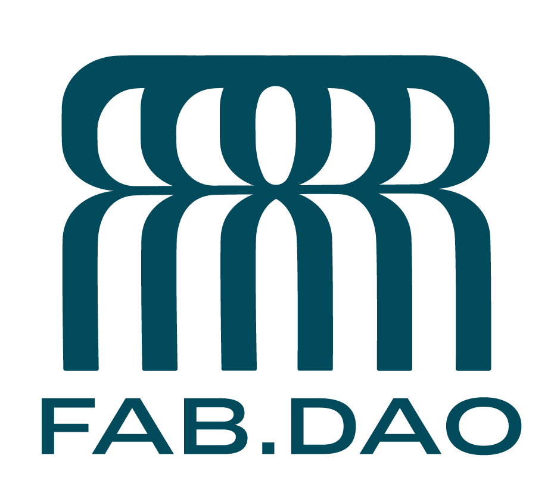

公共性如何被共同建造
Building Publicness Together
去中心化協作 ∩ AI 能動性
⟶ 知識機構的強健性
Decentralized Collaboration, AI-Enabled Agency,
and Institutional Robustness
黃豆泥
mashbean
Building Publicness Together
去中心化協作 ∩ AI 能動性
⟶ 知識機構的強健性
Decentralized Collaboration, AI-Enabled Agency,
and Institutional Robustness
黃豆泥
mashbean
We still begin with AI
and end with human beings themselves
校園
Campus
Oxford MPP No Devices Policy
職場
Workplace
My younger brother losing his job as an engineer
我 layoff 同事的經驗
My experience of laying off colleagues
Welcome to an age of high volatility
機構
Institutions
Santa Fe Institute
知識生產機構應該何去何從
Where should knowledge-producing institutions go from here?
知識機構
Epistemic Institute
機構
Institutions
The revival of digital democracy
數位審議與公民大會
Digital deliberation and citizens’ assemblies
放棄了點名制度
Letting go of roll-call systems
機構
Institutions
Trade unions
暫停車間機器的工人的自我救贖
Workers’ self-liberation through stopping
the machines on the shop floor
機構
Institutions
In an age of Dharma decline,
religious organisations begin to explore human nature
Institutions as nodes
財務危機、存在危機、轉型工程
Financial crisis, existential crisis,
and the work of transformation
I think, therefore I am
⟶ I make an impact, therefore I am
如果機構不能成為促進行動的開端，
機構就會持續面對存在危機
If institutions cannot become a starting point for action,
they will continue to face an existential crisis
AI Fatigue, AI Slop
穿外骨骼動力裝上健身房？
Wearing a powered exoskeleton to the gym?
Graduate Institute of Taiwan Literature, NTU
文學獎爭議，我們實驗讓人扮演 AI
The literary award controversy:
we experimented with having people play the role of AI
Rojava’s social experiments
在兵荒馬亂的時代中尋找主體性
Seeking agency amid war and turmoil
Social experiments unfolding in the UK

FAB DAO’s cooperative experiment
哈佛大學 Allen Lab 的數位公民基礎設施
Harvard Allen Lab’s Digital Civic Infrastructure
People-Power
AI 治理應保障人們共同塑造公共生活的權利
AI governance should protect people’s right
to help shape public life
透過組織，把共同資源轉為改變現實的集體力量
Through organising, turn shared resources
into collective power to create change
連結、學習、行動
Connect, Learn, Act
Danielle Allen et al. (2025) · Emily S. Lin & Marshall Ganz (2024) · Cynthia Garcia & Sarah Hubbard (2025)
Thank you